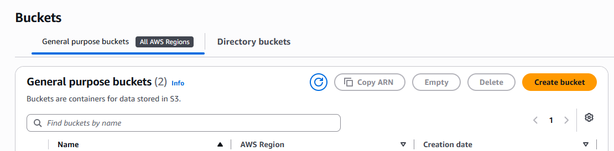
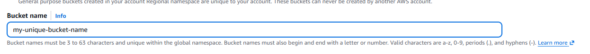
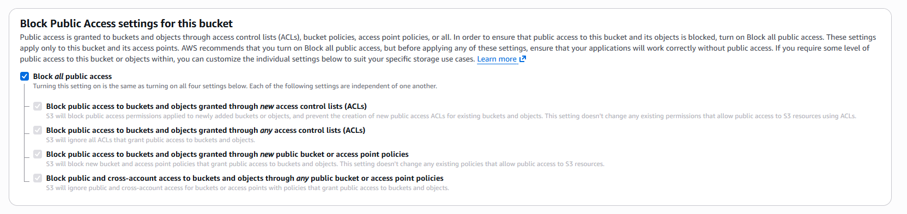
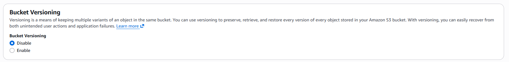

Amazon Simple Storage Service (AWS S3) is an object storage service offering industry-leading scalability, data availability, security, and performance. Whether you are storing static web assets, backup archives, or data pipelines analytics, S3 is often a foundational building block in cloud architecture.
Option A
Search for CloudShell in AWS and type:
aws s3 mb s3://your-unique-bucket-name --region us-east-1
Option B
Search for S3, select create bucket, add your unique name, check permission and versioning to match your goal.
1. Select Create Bucket
From the S3 dashboard, click the Create bucket button to start the creation wizard.

2. Add Your Unique Name
Enter a globally unique bucket name for your new S3 bucket.

3. Check Permissions
Configure Object Ownership and Block Public Access settings according to your security requirements.

4. Check Versioning
Enable or disable Bucket Versioning to match your project goals for object protection and recovery.
